Memory Lab — independent memory & brain-health news, guides and reviews
Alcohol and Memory: What Heavy Drinking Does to the Brain
Even moderate regular drinking disrupts deep sleep, raises cortisol, and shrinks the hippocampus over time. Here's what the research shows and how to protect your recall.
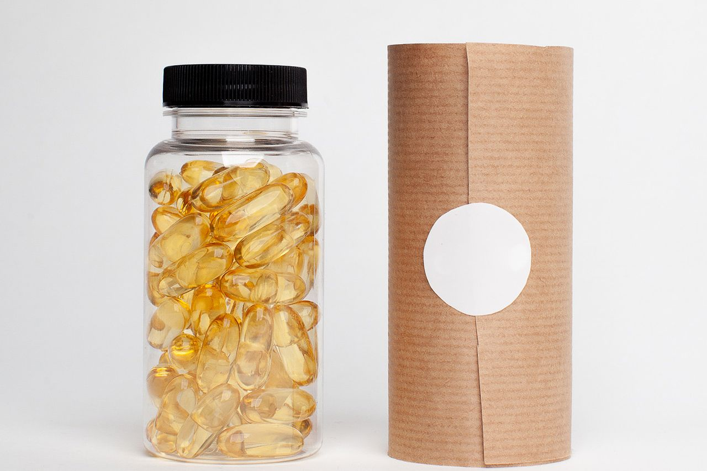
The 5 Best Memory Support Formulas of 2026, Ranked & Reviewed
We compared the most talked-about memory formulas on transparency, dosing, real reviews and guarantee. See which one came out on top.
Read the full review →Latest
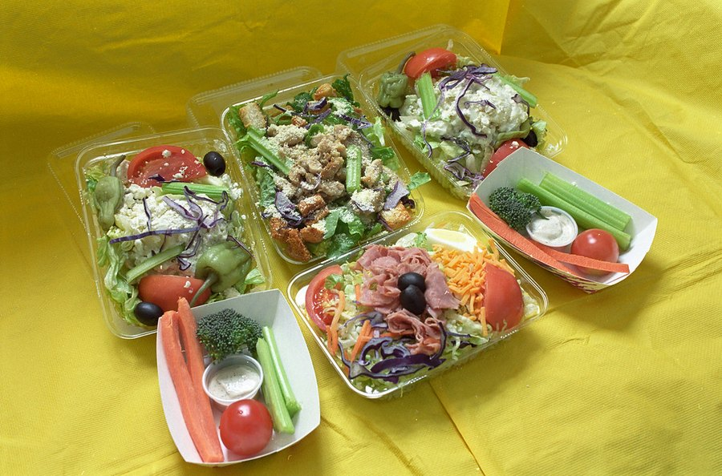
Intermittent Fasting and Brain Health: What the Research Shows
The animal data is compelling. Human evidence is more limited. Here's an honest look at what fasting does to the brain, memory, and dementia risk.
Read more →Dementia Prevention: 8 Evidence-Based Strategies
Research suggests up to 40-45% of dementia cases are linked to modifiable risk factors. Here are the eight strategies with the strongest evidence for protecting your brain.
Read more →Alcohol and Memory: What Heavy Drinking Does to the Brain
A drink or two is one thing. Regular heavy drinking is another. Here's how alcohol interferes with memory formation, sleep quality, and long-term brain health.
Read more →Why Do We Dream? What Dreams Do for Memory and the Brain
The brain doesn't switch off when you sleep. Here's what science shows about why we dream and what it means for how well you remember things the next day.
Read more →Memory & brain health
The Memory Palace Technique: How to Build One and Use It
The method that lets World Memory Champions memorize thousands of digits in one sitting. Here's how to build your own palace and start using it today.
Read more →How to Study More Effectively: Science-Backed Methods
Re-reading notes ranks near the bottom of effective study strategies. Here's what the research actually supports: active recall, spaced repetition, interleaving, and more.
Read more →
7 Early Signs of Cognitive Decline to Watch For
Some memory slips are entirely normal. Others are worth paying attention to. Here are the seven warning signs doctors flag as early indicators of cognitive decline.
Read more →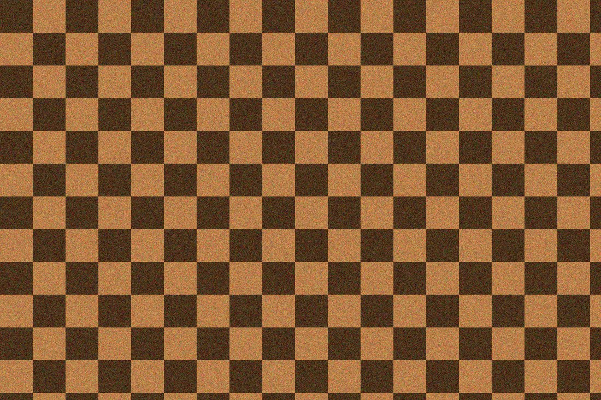
Brain Games for Adults: Which Ones Actually Help
Not all brain games are equal. Here's what the research says about which types genuinely sharpen memory and focus, and which ones mostly improve your score in that game.
Read more →Exercise and Brain Health: How Movement Protects Memory
Regular aerobic exercise is one of the most effective things you can do for your memory. Here's what decades of research show about the brain-body connection.
Read more →Does Meditation Improve Memory? What the Evidence Shows
Research shows that regular mindfulness practice changes the brain in ways that sharpen attention and working memory. Here's what the science actually says.
Read more →Scientists Reprogram Brain Immune Cells to Fight Alzheimer's
A new study finds a molecule called OLE can restore microglia to fight Alzheimer's plaques. Here's what it means for you.
Read more →How to Improve Your Memory: 11 Proven, Science-Backed Ways
The complete guide — the habits, foods and nutrients that boost recall and focus at any age.
Read more →The Real Reason You Keep Forgetting Names, Words & Where You Put Things
It's usually not "just aging." Here's the overlooked trigger behind everyday memory slips — and what helps.
Read more →Brain Fog: 7 Common Causes and How to Clear It
Brain fog is a symptom, not a disease. The 7 most common causes — and the steps that clear it.
Read more →Memory Loss vs. Normal Aging: How to Tell the Difference
What's normal forgetfulness, what's a red flag, and when to talk to a doctor.
Read more →
7 Foods & Daily Habits That Help Keep Your Memory Sharp After 50
Simple, science-backed changes you can start this week to support recall and focus.
Read more →Memory Exercises: 9 Brain Workouts to Sharpen Your Recall
Simple daily brain workouts that actually help — and which ones are worth your time.
Read more →How Stress Affects Memory (and How to Reverse It)
Chronic stress physically alters the hippocampus, impairing memory formation. Here's what the research shows and the steps that help reverse it.
Read more →Short-Term Memory Loss: Causes and What to Do
Most short-term memory slips trace back to fixable causes: sleep debt, chronic stress, and nutritional gaps. Here's how to identify what's driving yours.
Read more →How to Remember Names: 7 Tricks That Actually Stick
Names are hard to retain by design. These 7 science-backed techniques give your brain the hooks it needs to remember people reliably.
Read more →
Sleep and Memory: Why Deep Sleep Locks In Recall
Sleep is when the brain files away the day's memories. Here's what the science says about deep sleep, consolidation, and protecting both.
Read more →Forgetfulness in Your 40s: Is It Normal?
Most midlife memory slips trace to sleep, stress, or hormones, all fixable. Here's how to tell ordinary forgetfulness from a real warning sign.
Read more →Anxiety and Forgetfulness: The Overlooked Link
Cortisol impairs the hippocampus, and constant worry crowds out working memory. Here's why anxiety and forgetfulness so often travel together, and what to do about it.
Read more →Scientists Found a New Alzheimer's Trigger, and a Drug That Slows It in Mice
ETH Zurich identified a rogue enzyme called GRK2 as an unrecognized driver of Alzheimer's and developed Compound 10 to block it. Here's what the study found.
Read more →Menopause Brain Fog: Why It Happens and What Helps
The cognitive changes many women notice during perimenopause are real and have a biological basis. Here's what drives them and what actually helps.
Read more →Why Can't I Concentrate? 8 Hidden Causes
Poor concentration almost always has a fixable cause. Here are the eight most common drivers, in order of how often they're responsible, and what the evidence says to do.
Read more →Tip-of-the-Tongue: Why Words Vanish and How to Recall Them
That maddening feeling of knowing a word but not being able to say it is a retrieval failure, not a memory problem. Here's what's happening and what helps.
Read more →Dehydration and Brain Fog: How Water Affects Focus
Losing just 1–2% of body weight in fluid is enough to slow reaction time and impair short-term memory. Here's what the research shows and the simplest fix.
Read more →The Mediterranean Diet and Memory: What to Eat for a Sharper Brain
Decades of research point to one eating pattern as the best studied for brain health. Here's what the evidence shows about which foods matter most.
Read more →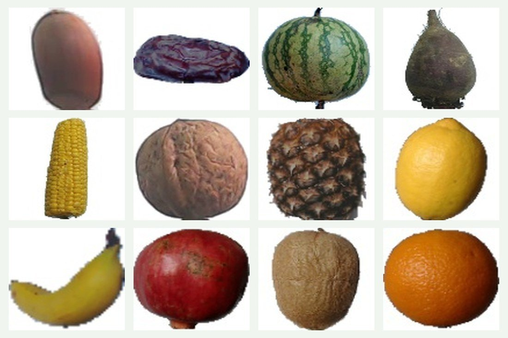
How to Stop Forgetting Things: 9 Practical Fixes
Most everyday forgetfulness has a fixable cause. These nine evidence-based strategies address the most common drivers, including sleep, attention, and nutrition.
Read more →11 Best Brain Foods to Boost Memory and Focus (2026)
The foods with the strongest evidence for supporting recall, concentration, and long-term brain health, ranked by how well the research holds up.
Read more →How to Focus Better: 10 Science-Backed Tactics
Concentration isn't a personality trait. It's a biological state shaped by sleep, environment, and habits. Here are the ten tactics with the best evidence.
Read more →Ingredients & evidence
Citicoline for Memory: Benefits, Dosage & Evidence
One of the most studied nutrients for focus and recall — how it works and how much to take.
Read more →Bacopa Monnieri: Benefits, Dosage & Side Effects
The Ayurvedic herb studied for memory — what works, the right dose, and what to watch for.
Read more →The Best Vitamins & Nutrients for Brain Fog and Focus
B12, vitamin D, omega-3, magnesium, citicoline and more — what helps and how to use it.
Read more →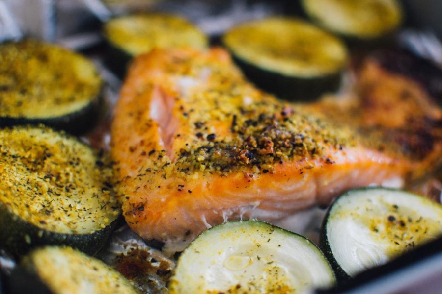
Omega-3 and Brain Health: DHA for Memory & Focus
How DHA & EPA support recall, the best food sources, and how much you need.
Read more →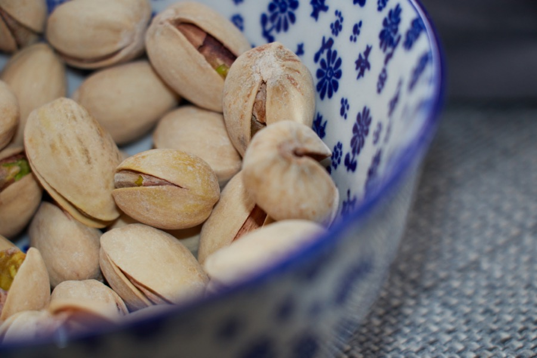
Magnesium for Memory & Brain Fog: Benefits, Forms & Dosage
The best forms (incl. L-threonate), food sources, dosage and who benefits.
Read more →Ginkgo Biloba for Memory: Does It Really Work?
One of the most tested herbal supplements has a more complicated track record than the marketing suggests. Here's what the research actually shows.
Read more →Phosphatidylserine for Memory: Benefits, Dosage & Evidence
One of the few brain nutrients with an FDA qualified health claim. Here's what clinical trials show and how it fits a broader memory strategy.
Read more →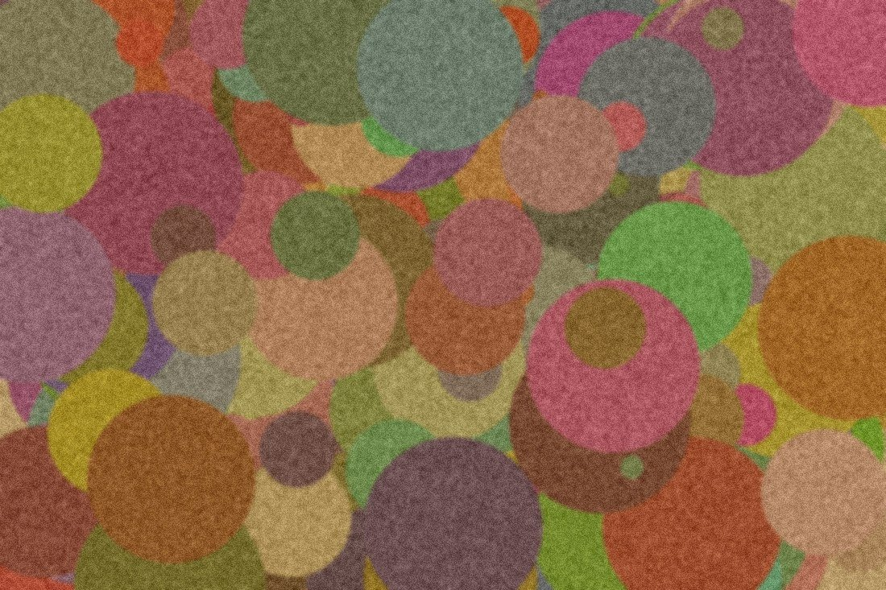
Lion's Mane for Memory & Focus: What the Research Says
The functional mushroom with the most compelling mechanism for memory support. Here's what trials show, the right dose, and realistic expectations.
Read more →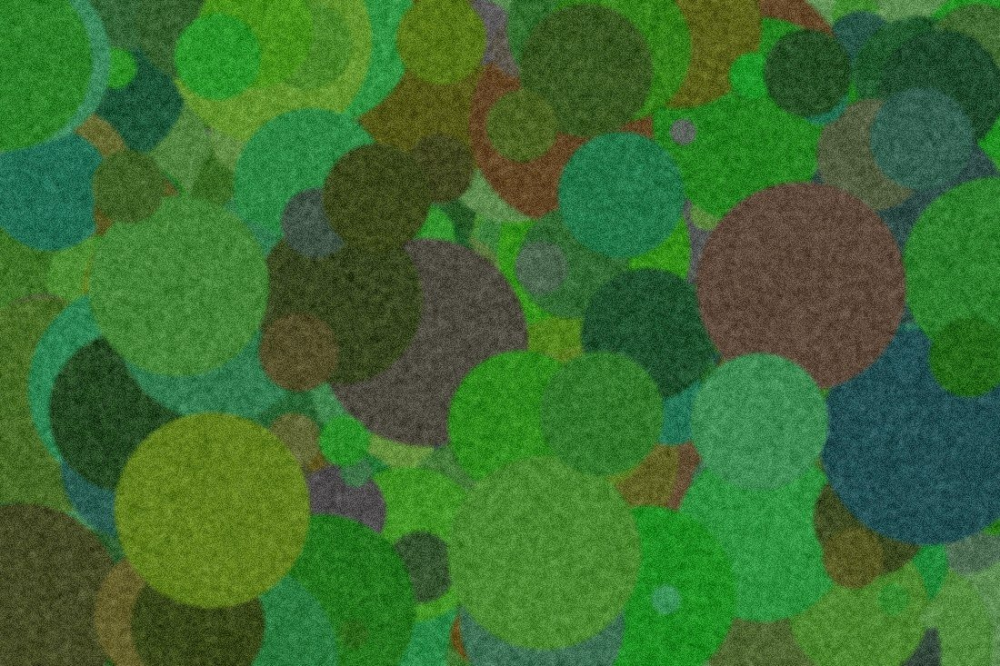
L-Theanine for Focus and Calm: Benefits, Dosage & Evidence
The amino acid in green tea that promotes calm alertness without sedation. Here's what the research shows and how much to take.
Read more →Alpha-GPC vs Citicoline: Which Is Better for Memory?
Both are popular choline supplements for focus and recall, but they work through different pathways. Here's how to choose between them.
Read more →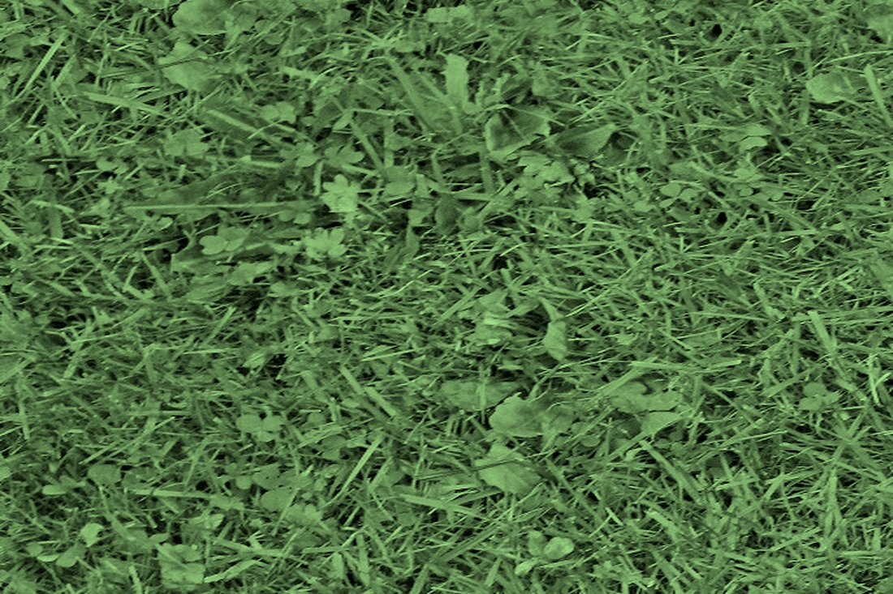
Vitamin B12 and Memory: The Deficiency Link Explained
Low B12 is one of the most commonly missed causes of brain fog and memory slips. Here's how deficiency affects the brain, who's at risk, and what to do.
Read more →Acetyl-L-Carnitine for Brain & Memory: Benefits, Dosage & Evidence
One of the few brain supplements with genuine double-blind trial data. Here's what it does, who benefits most, and how much to take.
Read more →Vitamin D and Brain Health: Why Your Levels Matter for Memory
Vitamin D isn't just a bone nutrient. Low levels are linked to brain fog, cognitive decline, and higher dementia risk. Here's what the evidence shows.
Read more →Rhodiola Rosea for Mental Fatigue and Focus
One of the few adaptogens with genuine clinical trial data. Here's what it does, when it works best, and the right dose to expect results.
Read more →Caffeine and Memory: Helpful or Harmful? What the Science Shows
Caffeine sharpens short-term alertness and working memory, but the story gets complicated after that. Here's the full picture.
Read more →Huperzine A for Memory: Benefits, Dosage & Safety
The natural acetylcholinesterase inhibitor from Chinese club moss. Here's what clinical trials show, the right dose, and who benefits most.
Read more →Nootropics Explained: A Beginner's Guide for 2026
The word "nootropic" covers everything from green tea to prescription smart drugs. Here's what the research actually supports, and how to think about this category as a newcomer.
Read more →Reviews & comparisons
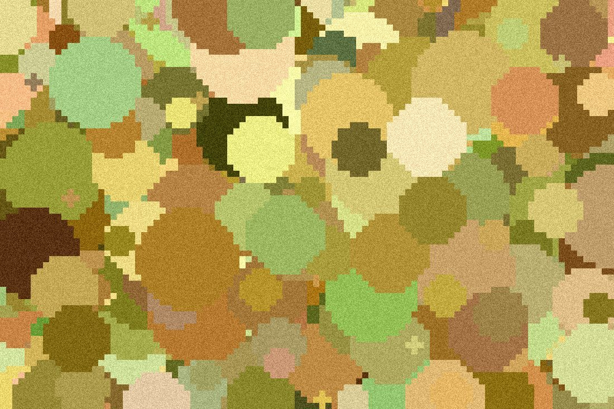
Best Nootropics for Seniors in 2026: Top Picks Ranked by Evidence
Several natural compounds have genuine human clinical data for older adults. Here are the ones that actually hold up, and what to look for on the label.
Read more →Best Supplements for Studying and Focus (2026): What Science Says
Most "study supplements" are marketing. A short list have real human clinical data. Here's which ones are worth taking and what they actually do.
Read more →Alpha Brain Review 2026: Honest Take + Better Alternatives
Onnit's flagship nootropic has a real clinical trial. But proprietary blends hide each ingredient's dose. Here's what the evidence shows and which formulas we rate higher.
Read more →Focus Factor Review 2026: Does It Work? An Honest Look
Focus Factor has real nootropic ingredients but hides their doses in a proprietary blend. Here's what it contains and what our editors recommend instead.
Read more →The 5 Best Memory Support Formulas of 2026 (Ranked)
Our editors compared the leading formulas head-to-head. One was the clear #1.
Read more →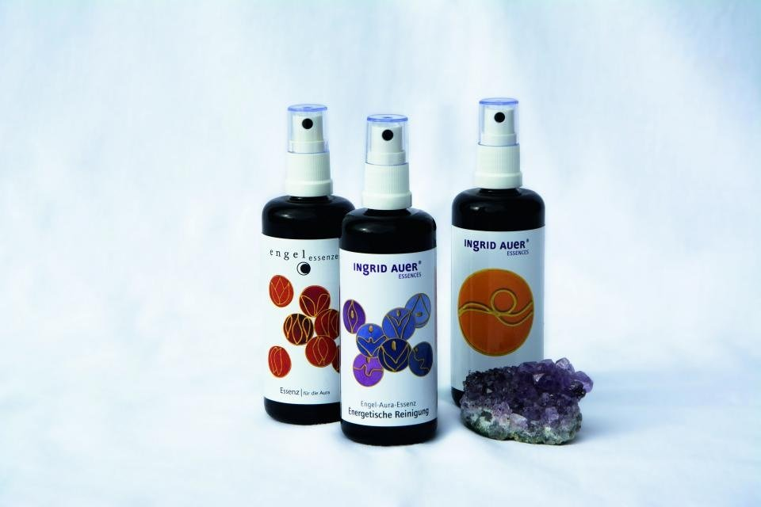
Prevagen Alternatives: Is It Worth It in 2026?
An independent look at Prevagen — and the better-value formulas we rate higher.
Read more →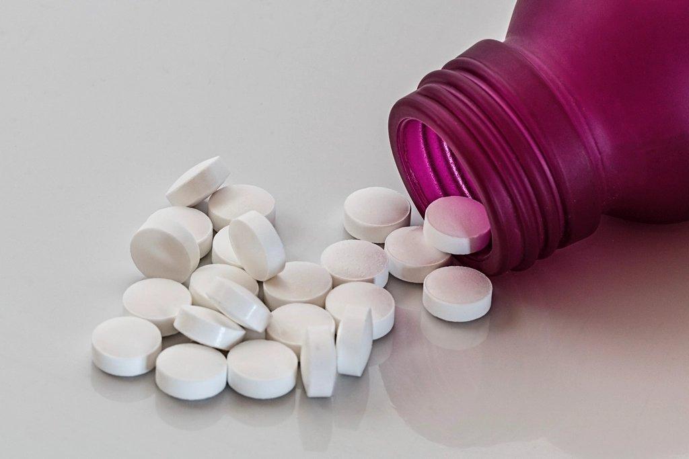
Neuriva Review: Does It Work — and What's Better?
Ingredients, what reviewers report, drawbacks, and the alternatives we rate higher.
Read more →Do Memory Supplements Actually Work? An Honest Buyer's Guide
Most don't, but the right kind can. The 3 things that separate a real formula from a scam.
Read more →Prevagen vs Neuriva: Which Is Worth It in 2026?
They dominate the pharmacy shelf, but the ingredient science tells a different story. Here's what's inside each bottle and which, if either, is worth your money.
Read more →Best Brain Supplements for Adults Over 50: What the Research Actually Shows
Most brain supplements don't have real clinical data. A short list do. Here's which ingredients are worth your money and what to look for on the label.
Read more →Bill Gates & brain research
Bill Gates on His Father's Alzheimer's — and What It Taught Him
Bill Gates Sr. had Alzheimer's. His son wrote about the experience and what it means for brain health.
Read more →
Why Bill Gates Is Investing Millions in Alzheimer's Research
His $100M bet on beating dementia — what it funds, and what it means for your brain.
Read more →Is There a 'Bill Gates Brain Pill'? The Truth Behind the Viral Ads
No — and here's how the deepfake celebrity scam works, plus what actually helps.
Read more →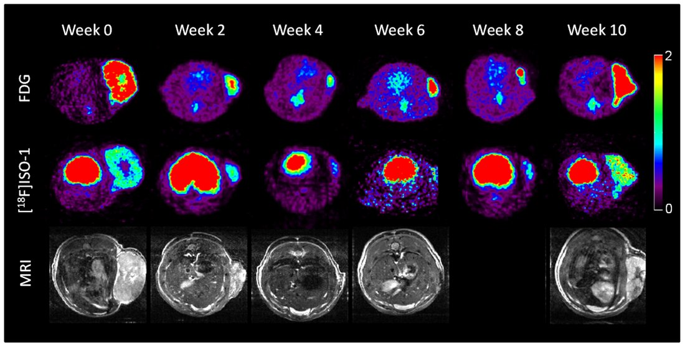
Bill Gates's Bet on Beating Dementia — and What It Means for You
The Dementia Discovery Fund, Diagnostics Accelerator, and the early-detection push — plus what you can do today.
Read more →3 Brain-Health Lessons From Bill Gates's Push Against Alzheimer's
What the science he's backing reveals about protecting your own brain — three practical takeaways.
Read more →The Early Alzheimer's Blood Test Bill Gates Helped Fund
How a simple blood draw may soon detect Alzheimer's a decade early — and the funding push behind it.
Read more →What Bill Gates Predicts About Beating Alzheimer's
His publicly stated view on detection timelines and treatment prospects — what he's said, what he's funded, and what it means for your brain today.
Read more →Inside the Diagnostics Accelerator Bill Gates Co-Founded
The 2019 program Gates co-funded to develop affordable blood tests for early Alzheimer's detection — what it does and why it matters.
Read more →What Bill Gates Says About Preventing Dementia
Gates committed over $50M to Alzheimer's research. Here's what his focus on early detection means for your brain health today.
Read more →Bill Gates and the Billionaires Funding the Fight Against Alzheimer's
Gates, the Chan Zuckerberg Initiative, and the late Paul Allen have each placed major bets on beating Alzheimer's. Here's what they're funding.
Read more →